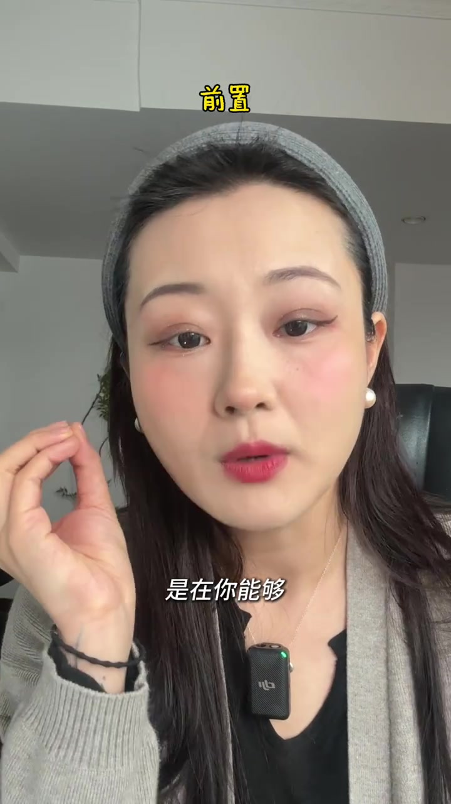
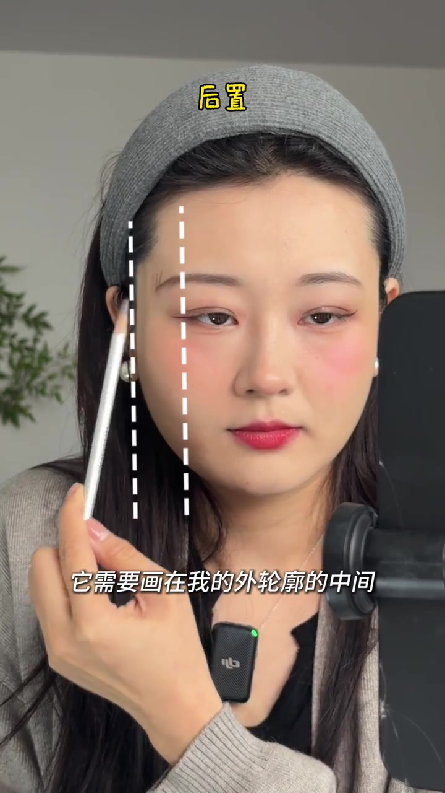
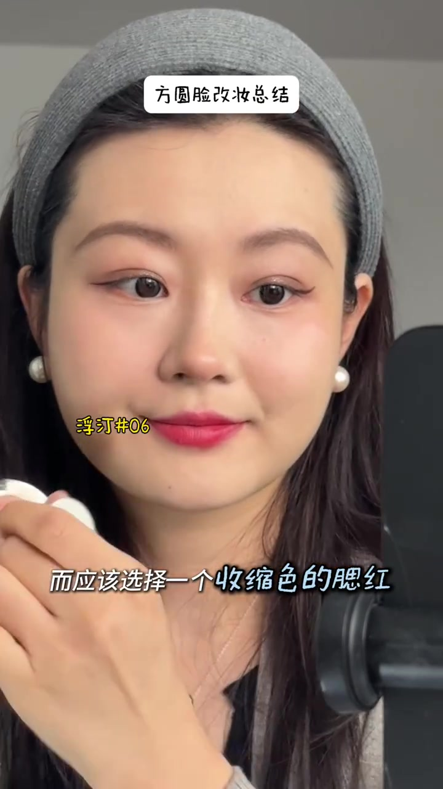
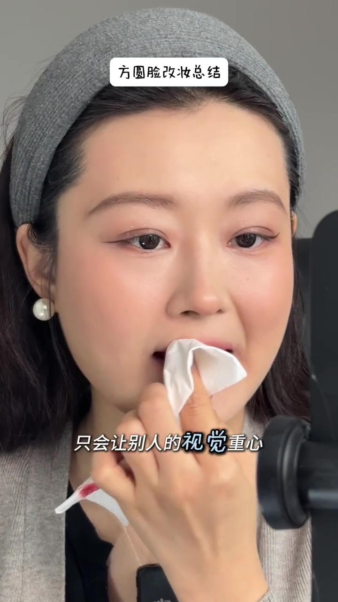
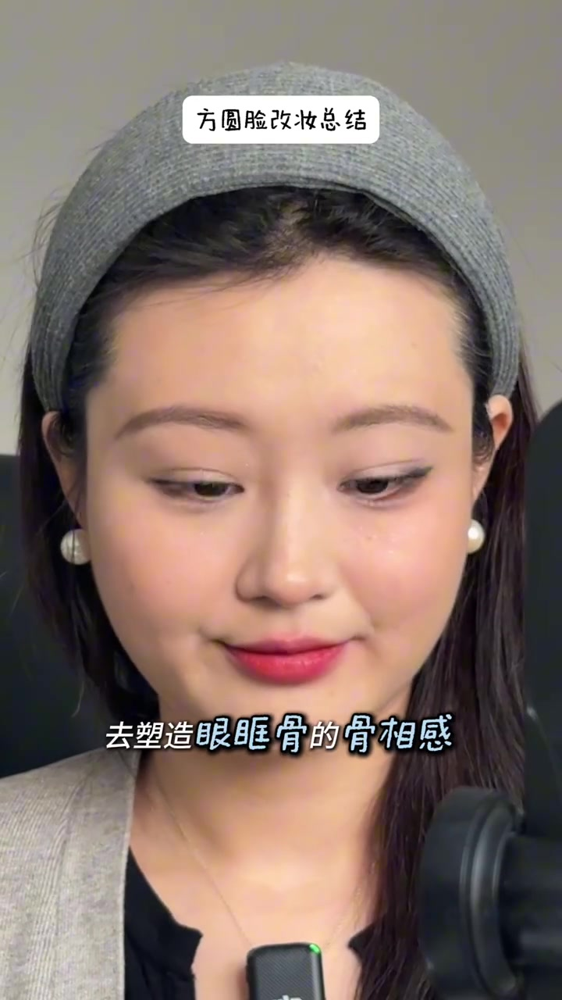
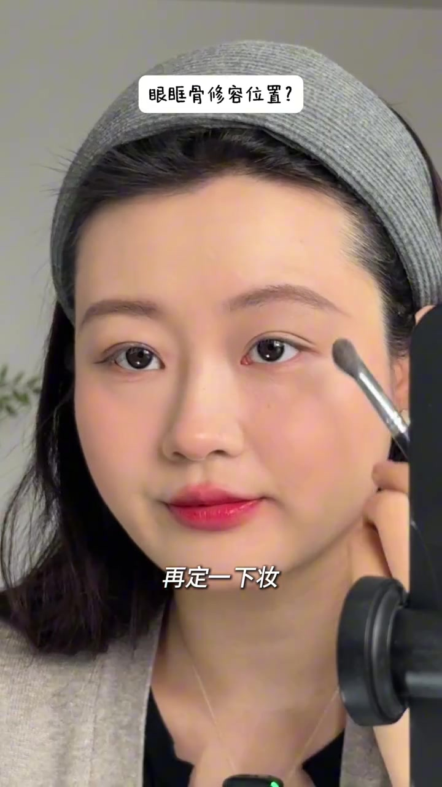
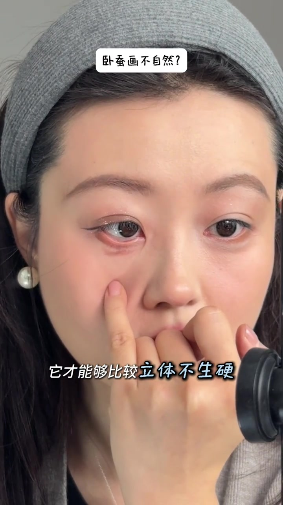
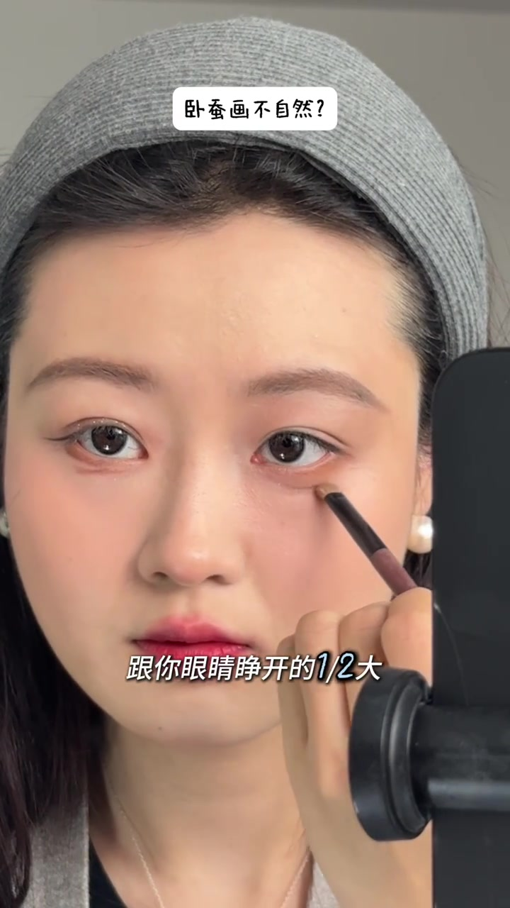

开场：为什么说方圆脸能「化妆开智」
UP 主先用前置自拍口播，再切到后置视角。她的论点很直接：方圆脸真正开智，发生在你愿意面对后置、看清自己脸型的时候——那个视角下，眉毛偏短、需要画到外轮廓中间、并带一点挑度去修脸，才会被看见。
画面字幕大意：「是在你能够……真正看清你的脸」；叠字从「前置」切到「后置」。
说明：Whisper 将「开智 / 后置 / 画在 / 挑度」误识为「开着 / 后肢腻 / 化在 / 调度」。下文以可见字幕与叠字为准；末尾转录区仍保留原始分段。


腮红别打中间：换收缩色修外侧圆轮廓
框架第二块落到腮红。UP 主明确反对「打在中间」，主张选收缩色腮红去修饰外侧偏圆的轮廓——这才是她认定的方圆脸腮红打法。画面标题叠出「方圆脸改妆总结」，并点出色号「浮汀#06」。
画面字幕：「而应该选择一个收缩色的腮红」

唇妆：颜色重要，模糊边界更重要
她一边用纸巾抹掉生硬唇线，一边解释：唇色当然重要，但边界若画得太死，视觉重心会掉到下半张脸，方圆脸看起来更宽。色号与画法她指向系列里的专期，本集只把原则钉死——模糊边界优先于硬描唇线。
画面字幕：「只会让别人的视觉重心」；口播接着落到「下半张脸……更宽」。

眼妆重点：不是眼线多长，是眼眶骨骨相
总结篇把眼妆从「画多深的眼影」拽回结构：学会用修容塑造眼眶骨的骨相感，让眼睛从二维变成三维，才是关键。有了这块基础，再换什么眼影色都能接上去。她提醒观众去看对应专期「开悟」。
画面字幕：「去塑造眼眶骨的骨相感」
Whisper 将「眼眶骨 / 骨相 / 二维·三维」误识为「眼框骨 / 骨像 / 二地·三地」。

手把手：眼眶骨怎么找、怎么修
框架讲完，UP 主进入「大家最找不准」的两块：眼眶骨修容与画不自然的卧蚕。位置规则很具体——后置已经知道眉要画多长后，眼眶骨落在「眉毛到眼角」这一段；有膏状修容就先勾范围，再用刷子晕开并定妆；没有膏状就用粉状再盖一层。形状像「小鱼钩」：从眉尾最长处接到眼角。接着在眼皮中间、眉骨下方放提亮，眼睛会立刻出现骨相与往后折叠感。
口播大意：「我的眼眶骨它就应该在我的眉毛到我的眼角的范围……看到没它就是一个小鱼钩。」

卧蚕为什么画不自然：先变成「眼影面」
她先对比两侧效果，把锅甩给刷子粗度：卧蚕要尽量画成一片眼影面，才立体不生硬。新手运笔不稳，就选带一点粗度的扁头刷，面才铺得开。下笔前先画下至——贴着眼睫毛根部往前蹭出「里深外浅」的三角弧度——才能定卧蚕大小。然后改用修容画卧蚕（别用眼影，不易显脏）；尺寸口诀是眼睛平视前方时，约为睁开眼睛的二分之一。刷子垂直于脸，最深落在黑眼圈下方，再往两边依次晕染。
画面字幕：「它才能够比较立体不生硬」；「跟你眼睛睁开的1/2大」。


看起来像黑眼圈？提亮与腮红收口
刚画完可能像黑眼圈——她说没关系。别指望哑光提亮「提」出来；建议拿刚才那支白色或米色膏状修容笔，提亮在最中间，但不要贴到下眼睑根部，好把下至区域留出来显色。手指轻拍两下即可晕开，通常不卡粉。若中间太生硬发白，再拿腮红在卧蚕区轻轻扫一点，会更自然。收尾建议：想先学眼妆，就先拿下眼眶骨与卧蚕这两块——不需要眼线眼影，也能放大眼睛、让眼睛更好看。
口播大意：「想先学画眼妆的，就先学这两个部分……一样能达到放大眼睛、让眼睛变好看的效果。」
Whisper 将「卧蚕 / 下至 / 扁头刷 / 哑光提亮 / 提亮」等大量美妆词误识；叙述已按字幕与操作画面校正。